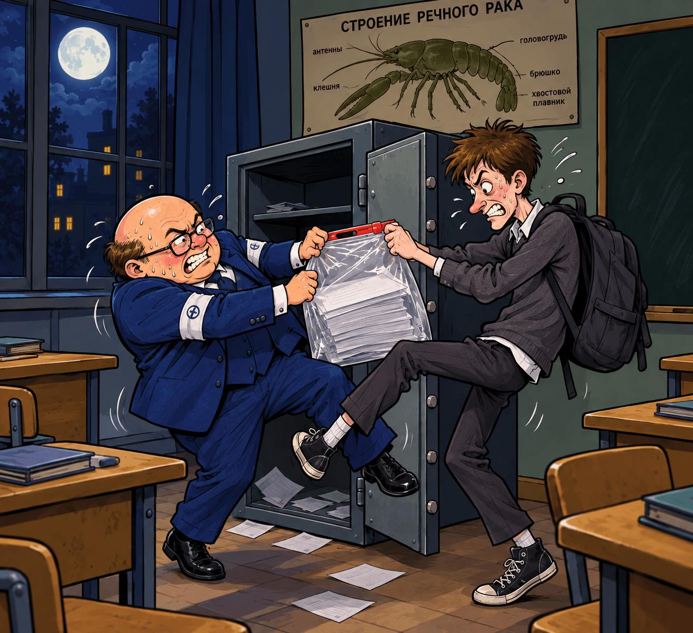
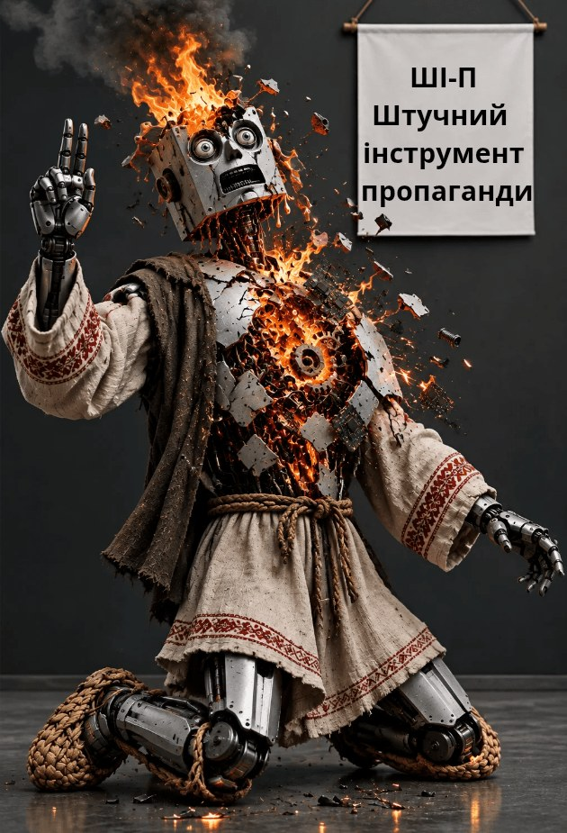

Ольга Щеглова (Борис Бидяга)
Балада про те, як домоткана правда стала суверенною
Ізборський референдум і хрещення Місяця
СЦЕНА 1. Нарада в Кремлі
За масивним дубовим столом, підперши руками підборіддя, сидять четверо. Над їхніми головами, на стіні, висить величезний інтерактивний екран, на якому світиться й мерехтить гасло про поступальний розвиток країни.
Мішустін (нетерпляче постукуючи по столу):
— Колеги, концепт буксує. З погляду фізики, поступальний рух повинен мати вектор. Однак якщо ми оцифруємо поточні показники макроекономічної звітності, у нас вийде рух у строго невизначеному напрямку. У Мінцифри під це три нейромережі лягли. Досі сервери охолодити не можуть.
Собянін (доброзичливо усміхаючись):
— Михайле Володимировичу, ви надто все ускладнюєте. Яка різниця, куди спрямований вектор, якщо інфраструктура працює? Подивіться на Москву. Поступальний розвиток по колу — ось наш із вами ідеальний вектор! Ми запускаємо БКЛ, МЦК, укладаємо плитку спочатку по першому кільцю, потім по другому, потім по Садовому. Люди при ділі, бюджет освоюється, швидкість колосальна. А те, що ми повертаємося в ту саму точку, — так це і є стабільність. За такої траєкторії економіка застрахована від випадкового падіння в прірву. Нам ваші вектори ні до чого. Головне, щоб бордюрний камінь вчасно підвозили.
Патрушев (буркотливо, не підводячи очей від папки з грифом «Секрет Полішинеля»):
— Дивні речі ви кажете, Сергію Семеновичу! Рух по колу не дає стовідсоткової гарантії від внутрішніх і зовнішніх загроз. Варто одній піднаглядній одиниці задивитися на всі боки — і вся ваша «динаміка» полетить по дотичній просто в обійми геополітичних противників. Потрібен надійний периметр. Три ряди колючого дроту, вишки, глушилки. Це дає можливість балансувати на краю найглибшої прірви невизначено довгий час. А якими траєкторіями та в яких напрямках відбувається рух усередині периметра, не має жодного значення. Безпека — первинна.
Кірієнко (примирливо усміхаючись):
— Колеги, кожен із вас по-своєму має рацію. Нам потрібні нові KPI для переосмислення старих завдань. Візьміть, наприклад, «Рух Перших». Надто розпливчасто. Надто невизначено. Не чіпляє. Перетворімо його на «Суверенну кругову динаміку Перших». Пряме попадання: тут проглядається величезний нереалізований потенціал. Колеги, не хвилюйтеся, ми задовольнимо усі ваші потреби. Технократи отримають красиві таблиці Excel, москвичі — нові річкові електротрамваї з підігрівом сидінь, а силовому блоку ми гарантуємо, що ніхто не випаде за межі контуру живим. Від завтра починаємо нову пропагандистську кампанію. Давно час оновити наш пошарпаний фасад.
СЦЕНА 2. Вічний рух
Величезне, витоптане до сіро-жовтого пилу поле, на якому накреслено два концентричні кола. Зовнішній периметр майданчика наглухо обнесений трьома рядами колючого дроту, над яким ліниво дзижчать важкі квадрокоптери. По чотирьох кутах, на високих дерев’яних вишках, завмерли охоронці. Їхні обличчя здаються витесаними із сірого граніту — страшні, з важкими щелепами й нерухомим поглядом. Охоронці міцно стискають автомати, ліниво спльовуючи лушпиння від насіння.
Усередині периметра кипить життя. По величезному зовнішньому колу, штовхаючись ліктями й перечіпаючись, безладним натовпом біжать дорослі — «великі люди» у строгих, але пом’ятих костюмах, зі шкіряними портфелями в руках. Вони хриплять, підрізають одне одного на поворотах, падають у пил, тут же схоплюються й діловито біжать далі, час від часу прискорюючись, щоб обігнати сусіда. На ходу вони вихоплюють одне в одного з рук призи та бонуси: дрібні блискучі дрібнички, пластикові грамоти й талони на цукор, які їм періодично скидають із вишок охоронці. Весь цей ревучий, метушливий натовп рухається з вражаючою швидкістю, здіймаючи хмари пилу, які затуляють і огорожу, і вишки з охоронцями, і навіть сонце.
Усередині великого кола, надійно приховане натовпами дорослих, розташоване мале коло. Там, у відносній тіні, бігає молодше покоління, в однакових триколірних панамках. Діти рухаються в такій же хаотичній манері, штовхаючись і наступаючи на п’яти тим, хто біжить попереду.
На відміну від дорослих, зайнятих гонитвою цілий день, дітям дозволено робити перерви. Під час цих перерв у школах і дитячих садках із дітьми проводять «Розмови про важливе».
СЦЕНА 3. «Розмови про важливе»
Дитячий садок «Сонечко». Велика зала. У повітрі витає незнищенний запах хлорки й підгорілої солянки. Діти великим півколом сидять на підлозі. Навпроти, із триколором у руці, стоїть вихователька. У центрі зали розкладена іграшкова кільцева залізниця, якою, тихенько дзижчачи моторчиком, їздить потяг із трьох вагончиків із локомотивом. Щоразу, коли потяг проїжджає повз станцію, він уповільнює хід, з віконця висовується машиніст і голосно кричить:
— Ку-ку!
Вихователька змахує прапорцем:
— Діти, дружно! Раз-два-три!
Вихованці з радісними усмішками на обличчях кричать у відповідь:
— Кукуріку!
Потяг вирушає на наступне коло. Повз кубики, повз невеселого плюшевого ведмедика з відірваним вухом, повз глуху стіну.
Дзижчання. Станція.
Машиніст:
— Ку-ку!
Дитячий хор:
— Кукуріку!
Вихователька:
— Діти, чому нам подобається, коли потяг їздить по колу?
Дитячі голоси:
— Стовбільність!
— Наказуваність!
— Безпека!
Вихователька:
— Правильно. Стабільність, передбачуваність і безпека.
Потяг знову під’їжджає до станції. Машиніст висовується з вікна:
— Ку-ку!
Дитячий хор:
— Кукуріку!
І лише один хлопчик, який сидить у дальньому кутку кімнати, не бере участі в загальному хорі. На голові в нього стирчить безглузда блискуча шапочка, скручена з фольги від шоколадки «Оленка». Поки решта дітей ловлять ротом невидимі хвилі, що йдуть від роутера, срібний купол на його голові ледь помітно вібрує, відбиваючи їх назад.
СЦЕНА 4. Шапочка з фольги проти Суверенної кругової динаміки
На сто двадцятому колі потяг смикнувся й зійшов із рейок, не доїхавши до станції якихось два метри. Лопнула дешева китайська вісь колісної пари, і колесо від локомотива урочисто викотилося на середину кімнати.
Потяг зламався. Машиніст не висунувся з вікна. Сигнал «Ку-ку» не пролунав.
У залі запанувала гробова, дзвінка тиша. Діти завмерли, на їхніх обличчях — занепокоєння й страх. Та й сама вихователька заціпеніла, із триколором у піднятій руці; на її обличчі читаються розгубленість і тривога.
Тяжкий морок огорнув кімнату. Ніби зламалася не вісь локомотива, а вісь, на якій обертався їхній нехитрий світ.
І лише хлопчик у фольгованій шапочці залишався спокійним і незворушним. Він повільно підвівся на весь зріст. Озирнувся на однолітків, що завмерли, мов соляні стовпи. Подивився на виховательку з застиглими, скляними очима.
— Чого ви всі злякалися? — спокійно й упевнено сказав хлопчик, поправляючи шапочку. — Нам просто морочать голову.
Він ступив уперед, байдуже наступивши на пластикові рейки. Хиткий контур із тріском луснув під його черевиком, розлетівшись на дрібні шматочки.
Хлопчик вийшов із дверей дитячого садка й попрямував просто на полігон.
Спочатку він врізався в натовп дітей на малому колі. Малюки в панамках дріботять ніжками, важко дихаючи й дивлячись просто перед собою. Хлопчик протискується крізь натовп, але його не помічають — усі погляди прикуті до дорослих, які біжать по великому колу.
На великому колі спекотно й брудно. «Великі люди» в пом’ятих костюмах ревуть, хриплять і відштовхують одне одного ліктями, намагаючись першими дістатися до призів і талонів. Хлопчик насилу пробирається крізь цей щільний, просякнутий запахом поту й пилу людський натовп. Вони наштовхуються на нього, але не помічають, обходячи, наче прикру перешкоду.
Нарешті, подолавши обидва кола, хлопчик наблизився до охоронюваного периметра. На відміну від людей, система відреагувала негайно. Охоронці на високих дерев’яних вишках миттєво ожили. Їхні гранітні обличчя спотворила лють, вони синхронно підняли автомати й із глухим механічним клацанням звели затвори. Із прихованих динаміків над полем пролунали погрози й вимога негайно повернутися до дитячого садка «Сонечко».
Біля колючого дроту хлопчик зупинився. Хвилин п’ять уважно вивчав поглядом огорожу, вишки та охоронців. Потім нахилився й підняв із землі важкий камінь.
— Ви всього лише картинка, — неголосно, але чітко сказав хлопчик.
Він розмахнувся й із силою жбурнув камінь просто в центр барвистої панорами.
Удар! Тріск! Ілюзія тотального контролю миттєво розсипалася на порох. Величезний цифровий фасад із оглушливим дзвоном розлетівся міріадами скляних бризок та іскристих діодів. Колючий дріт, дерев’яні вишки та страшні пики охорони за секунду перетворилися на чорні мертві квадрати розбитого LED-екрана.
Крізь величезну проломину в нескінченному моніторі на витоптаний полігон увірвався потік свіжого вітру й хлинуло справжнє, чисте сонячне світло. За уявним парканом не виявилося нічого, крім безкрайнього дикого поля.
Хлопчик легко переступив через купу битого скла і, не озираючись, пішов геть, справжнім горизонтальним вектором.
СЦЕНА 5. А чи був хлопчик?
Несанкціонований відхід піднаглядної одиниці швидко привів виховательку до тями. Швидким кроком вона перетнула кімнату і, безглуздо підстрибуючи, кинулася бігти за втікачем.
Але хлопчик був уже далеко. Кілька разів вона крикнула йому, вимагаючи повернутися, але він не зупинився і навіть не озирнувся.
Коли вона підійшла до діри, пробитої каменем у нескінченному моніторі, видовище, що відкрилося її очам, спричинило в її душі шок. Її почуття не можна було назвати ні радістю, ні захопленням, ні здивуванням. Це був тваринний, первісний страх.
Вихователька різко розвернулася й поспішила назад, до дитячого садка. У звичній обстановці вона одразу заспокоїлася й розслабилася. Несподівана поломка потяга вже не здавалася їй трагедією. Вона суворо оглянула дітей і спокійно та впевнено запропонувала продовжити заняття.
Вона сказала:
— Потяг у ремонті, нічого страшного. Поки його ремонтують, ми самі станемо потягом. Петю, ти будеш локомотивом. Коля, Міша та Альоша будуть вагончиками. А Сеню призначаємо машиністом. Ну, хлопці, поїхали!
І знову, як у старі добрі часи, кімнатою рознеслося вічне «Ку-ку», і суверенною луною йому відгукнулося вигадливе «Кукуріку».
А вихователька, дивлячись на цю сцену, розчулювалася до сліз і думала: «Як же добре й правильно влаштоване наше життя! А хлопчик — він просто заблукала овечка. Та й чи був він насправді? Може, ніякого хлопчика й не було?»
#ПравославнийВоєннийПутінізм

ДІЯ 1
Пакт Молотова — Ріббентропа
У кабінеті пахло шкільною крейдою, старим лінолеумом і близькою грозою. Настінний годинник із зозулею, яка давно втратила голос, відлічував третю годину ночі.
Васісуалій Іванович, голова ДВК № 1234, стояв перед сірим металевим сейфом у позі людини, яка збирається стрибнути в безкінечність. На ньому були сатинові нарукавники й синій костюм-трійка, трохи залиснілий на ліктях. У руках він стискав складаний ніж і новенький чиновницький портфель із крокодилячої шкіри.
Васісуалій Іванович озирнувся на темне вікно, за яким шуміли тополі, і тихо, з глибоким зітханням, сказав у порожнечу:
— А може, так треба? Може, саме в цьому нічному спокутуванні й криється домоткана правда російської державності? У торжестві порядку над хаосом?
Він присів навпочіпки перед сейфом. Коліна хруснули із сухим, майже біблійним тріском. Сейф не піддавався. Пластикова пломба здавалася Васісуалію Івановичу печаткою самого Сатани, який перегороджує шлях до найвищої гармонії.
Він згадав класику.
— Лоханкін... — прошепотів Васісуалій Іванович, підважуючи язичок пломби кінчиком ножа. — Васісуалію Андрійовичу, побратиме в пошуках і стражданнях! Я тебе зневажаю. Ти — крав. Будьмо відверті: ти підло, вночі, тягав із чужої каструлі шматки вареної курки. Заради насичення низької плоті. Дрібний егоїзм, негідний російської інтелігенції!
Лезо зісковзнуло, і Васісуалій Іванович боляче вколов палець. Він зашипів, але погляду від сейфа не відвів. В його очах спалахнув вогонь істинного, неземного безкорисливого служіння.
— А я! — він притиснув поранений палець до грудей, просто до серця. — Хіба я краду? Хіба я виношу звідси хоч одну народну копійку, хоч один занюханий бюлетень? Ні! Мій промисел чистий і піднесений. Я не краду, а навпаки — додаю! Я привношу до цього сейфа те, чого йому так відчайдушно бракує, — повноту! Я збагачую цю убогу, німотну посудину теплом людської турботи. Я — долоня, що дає, а не та, що загрібає!
Васісуалій Іванович судомно вдихнув, витер чистою носовою хустинкою піт із чола й дістав із портфеля сейф-пакет із фальшивими бюлетенями. Він почувався Атлантом, який виправляє перекошене небесне склепіння.
У цей момент двері класу тихо рипнули, і в отворі з’явився силует пильного спостерігача з кишеньковим ліхтариком.
— Микито Сергійовичу... — збліднувши, прошепотів голова, передчуваючи неминучу прочуханку на завтрашньому засіданні комісії.
Застигнутий на місці злочину, він завмер із піднятою ногою — здалеку його можна було прийняти за чаплю на болоті.
— Ви неправильно зрозуміли, — нервово продовжив Васісуалій Іванович. — Це акт чистого альтруїзму...
Нічний гість, студент-спостерігач Микита, стояв за три кроки від нього. У руці в Микити замість смартфона був... такий самий складаний ніж і порожній рюкзак.
Запала довга, майже театральна пауза.
Першим тишу порушив голова, перейшовши на витончений драматичний шепіт:
— Микито... Ви? Але як же... мандат? Дух демократії? Прозорість процедур? Ви прийшли, щоб зруйнувати підвалини?
— Які підвалини, Васісуалію Івановичу? — гірко всміхнувся студент, сідаючи на вчительський стіл. — Я прийшов вилучити. Вилучити цю мерзоту, цей підлог, цю вашу «домоткану правду». Я хотів урятувати протокол, очистити його від скверни! Винести з цього залізного ящика все, що ви туди накидали за день!
Васісуалій Іванович повернув ногу на місце й обурено закинув голову, на мить забувши про страх:
— Вилучити?! Осквернити святиню? Ви — хижак, Микито! Ви як Паніковський, який мріє обікрасти підпільного мільйонера! Я, може, душу свою сюди вкладаю. Я не краду, я додаю! Я сію насіння стабільності, а ви хочете її зруйнувати? Залишити порожнечу?
— Ваша «стабільність» — це підробка! — палко вигукнув Микита, роблячи крок до сейфа. — Я повинен усе вигребти й відновити незайману чистоту народного волевиявлення!
— Ні, не дам! — Васісуалій Іванович грудьми затулив сірий метал. — Якщо ви вилучите, у мене баланс не зійдеться! Мене Антоніна Петрівна живцем в асфальт закатає!
— А якщо ви додасте, у мене ідеали рухнуть! І звіт до штабу зірветься! — Микита потягнувся до дверцят сейфа. Голова схопив спостерігача за руку. Чоловіки зчепилися.
Це була найдивніша й найтихіша бійка в історії виборів. Вони не билися кулаками — вони інтелігентно штовхалися ліктями, шипіли одне на одного й важко дихали. Один тягнув пакет до сейфа, інший намагався викинути те, що вже було всередині.
Через двадцять хвилин обидва, знесилені, впали на підлогу просто перед об’єктивом камери відеоспостереження, яку, на щастя, завбачливо розвернули до стіни.
— Фух... — Васісуалій Іванович витер рукавом чоло. — Ну добре. Ви вилучите — мені кінець. Я додам — вам ганьба. І заради чого ми губимо одне одного?
— І то правда, — важко дихаючи, погодився Микита. — Якщо я все вилучу, вони ж анулюють дільницю. Мої три дні чергування на розкладачці — коту під хвіст. Ніхто нічого не доведе.
— А якщо я додам ще, — розсудив голова, — ТИК виявить, що в нас явка 102 %, і мене все одно розіпнуть. За дурість.
Вони переглянулися. У повітрі виразно запахло великою угодою.
— Микито, — проникливо сказав Васісуалій Іванович. — Давайте визнаємо: система крихка. А ми з вами — лише гвинтики в її механізмі. Що, як ми... збережемо статус-кво?
— Це як? — примружився студент.
— Ви не чіпаєте того, що всередині. Я ховаю те, що приніс, у портфелі. Ми запечатуємо сейф старою пломбою, ви лягаєте на свою розкладачку, а я йду пити валідол. Цифри залишаються рівно такими, якими були вчора. Ні нашим, ні вашим. Ідеальний баланс.
Микита подивився на свій порожній рюкзак, потім на змучене обличчя голови.
— Чорт із вами, Васісуалію Івановичу. Залишаємо як є. Якщо дивитися в масштабах цілої країни, цей сейф усе одно нічого не змінить.
Вони скріпили свій пакт про ненапад міцним чоловічим рукостисканням і розійшлися.
ДІЯ 2
Урочисте прочуханення
Ранкове засідання територіальної виборчої комісії (ТИК) дихало старозавітним гнівом. Голова ТИК, Антоніна Петрівна — дама з зачіскою купольного типу й очима матірого податкового інспектора, — розносила Васісуалія Івановича в пух і прах.
Не за моральний вигляд, ні. Її поранила його феноменальна, посконна тупість.
Васісуалій Іванович стояв біля дошки, нещасний і пом’ятий, наче його щойно прогнали крізь стрій донських козаків.
— Ні, ви тільки подивіться на цього інтелігента! — Антоніна Петрівна гупнула кулаком по столу, від чого графин із водою обурено дзенькнув. — Недороблений наш Лоханкін! Ми тут через нього валідол жменями п’ємо, а йому і за вухом не свербить! У нашого колективу, Васісуалію, до тебе лише одне запитання: чому ти попався?!
Васісуалій Іванович спробував було відкрити рота, щоб знову завести свою шарманку про «долоню, що дає» і «домоткану правду», але голова ТИК перебила його на злеті:
— У людей як у людей! Тихо, благородно, з вогником і без жодного свідка. А цей влаштував третьосортний бойовик із нічними сеансами! І хай би просто попався. Поясни мені, заради Христа, якого біса на твоїй дільниці взагалі вештаються спостерігачі?! Нормальні голови давно вже всіх цих розумників виперли до собачої матері! Хтось довідку від санітарів зварганив, хтось поліцію викликав через «підозрілий рюкзак», хтось просто стільці солідолом намазав. Можливостей — мільйон! А в тебе?
Антоніна Петрівна глибоко вдихнула й вигукнула на найвищій ноті:
— А в тебе цей студент у класі ночує!!! Обжився! Ти б перед ним ще червоний килим розгорнув та чаєм із блюдечка пригостив!
Із кутка кімнати, задумливо крутячи в руках дорогий «Паркер», озвався куратор від адміністрації:
— Так, Васісуалію Івановичу. Бюлетені треба додавати, а свідків — віднімати. А у вас замість арифметики — лірика і чорт знає що.
— Та ще й пакт Молотова — Ріббентропа уклав! Дипломат! Стратег! Історична особистість... із підворіття! — голос Антоніни Петрівни вібрував від ледве стримуваної люті. — Ви тільки подивіться на цього рафінованого інтелігента! Влаштувати в кабінеті біології Ялтинську конференцію!
Васісуалій Іванович поправив окуляри, які з’їхали на ніс, і зробив слабку спробу виправдатися:
— Антоніно Петрівно, але ж це компроміс... Він хотів вилучити, я хотів додати. Ми знайшли домоткану правду в нейтралітеті. Ми зберегли статус-кво! Цифри які були, такі й залишилися, а могло ж закінчитися чортзна-чим!
— Та плювати мені на твій статус-кво! — Антоніна Петрівна гупнула кулаком по столу так, що олівниця підскочила й перекинулася. — Ти хоч розумієш, що ти накоїв, Васісуалію?
Васісуалій Іванович ображено стиснув губи й ледве чутно прошипів:
— Вовчице ти, Антоніно...
Антоніна Петрівна підвелася й суворо поглянула на голову:
— Що ти там бурмочеш, душе російської інтелігенції? У тебе просто під носом класовий ворог гніздо звив у кабінеті біології, під плакатом із річковим раком! А ти з ним на брудершафт нічні пакти підписуєш! І ліктями біля сейфа штовхаєшся. Замість того щоб виставити паршивця за двері. А потім оголошуєш нічию! У мене план, у мене рознарядка, а він пачку бюлетенів не може вкинути без скандалу... Тьху!
Куратор від адміністрації, який сидів у кутку, меланхолійно зітхнув і додав свою лепту:
— Так, Васісуалію Івановичу. Ні собі, ні людям. Спостерігач спить на розкладачці, голова сидить на валідолі, а результат — наче виборів узагалі не було. Домовитися з перевіряльником — це, звісно, по-нашому, але навіщо він у вас у кабінеті біології живе? Його ж тепер звідти кліщами не витягнеш.
Васісуалій Іванович сумно опустив голову. Він розумів, що велике примирення сторін не знайшло відгуку в серцях керівництва.
«А може, так треба, — подумав він. — Може, у цьому й полягає велика домоткана правда? Покарання супроводжується стражданням. Через страждання приходить очищення. Отже, у покаранні й полягає та сама домоткана правда? Але якщо в покаранні домоткана правда, то в чому тоді трагедія російського лібералізму?»
ДІЯ 3
Суверенна правда
На секунду Антоніна Петрівна завмерла, наче статуя, з піднятим догори вказівним пальцем. У її очах, які досі метали громи й блискавки, спалахнула іскра справжнього генія номенклатурної думки. Гнів змінився блаженним, майже материнським замилуванням.
Вона подивилася на притихлого Васісуалія Івановича, як на юродивого, через якого на світ зійшло божественне благословення.
— Геній... — прошепотіла голова ТИК, повільно опускаючись у крісло. — Васю, ти не Лоханкін, ти наш головний стратегічний ресурс!
Куратор від адміністрації перестав крутити свій дорогий «Паркер» і нашорошив вуха.
— Антоніно Петрівно, ви про що? — страждальницьким голосом запитав Васісуалій Іванович.
— Про геополітику провінційного замісу, Васю! — Антоніна Петрівна переможно ляснула долонею по столу. — Ми не будемо ховати цю ганьбу. Ми піднімемо її на наш бойовий прапор!
Навіщо нам приховувати, що цей твій студент бешкетував біля сейфа зі складаним ножем? Ми зробимо з цього світову сенсацію!
Ми розповімо всьому світу, як опозиційні спостерігачі ночами розкривають наші сейфи й цинічно крадуть народне волевиявлення!
У кабінеті закипіла робота. Вже за годину місцеве телебачення, три телеграм-канали та дві газети з великим патріотичним надривом віщали про «нічне святотатство в кабінеті біології».
Журналісти змінювали один одного, знімаючи крупні плани подряпаної пломби та байдужого річкового рака на плакаті.
Екстрені випуски кричали про «спробу вкрасти голоси пенсіонерів і трудівників тилу».
Спостерігач Микита, прокинувшись на своїй розкладачці, виявив себе лежачим в оточенні телекамер і суворих дам із батьківського комітету, які негайно звинуватили його в крадіжці майбутнього у їхніх дітей.
Пакт Молотова — Ріббентропа з тріском луснув під колесами суверенної інформаційної машини.
Васісуалій Іванович, стоячи перед камерами, картинно заламував руки й віщав про «замах на святиню» та виродження російського лібералізму, відчайдушно пишаючись своєю новою роллю рятівника підвалин.
Але в глибині душі його терзали сумніви. Він думав: «Покарання не відбулося, отже, страждання скасовується. Але в чому ж тоді криється наша велика домоткана правда?»
ДІЯ 4
Апофеоз суверенності
Настав недільний вечір — час підрахунку голосів. ТИК у повному складі, затамувавши подих, сидів перед величезним екраном, на який виводилися перші дані ДАС «Вибори».
Антоніна Петрівна нервово пила чай, куратор звіряв таблиці, а Васісуалій Іванович тихенько молився в кутку за свій баланс.
На екрані замиготіли цифри. Стовпчик правлячої пропутінської партії рвонув угору з такою швидкістю, наче його підштовхнула сама Господня десниця.
Антоніна Петрівна вдивилася в монітор, протерла окуляри й весело розсміялася:
— Ну треба ж! Васю, ти тільки подивися! Рейтинг нашої партії настільки високий, що навіть твоя нічна драма з мордобоєм нічого не змінила! Вони набрали абсолютну більшість із таким запасом, що твій студент міг би абсолютно спокійно просто підірвати цей сейф до чортової бабусі разом зі школою — результат би й не здригнувся!
Куратор від адміністрації задоволено закрив блокнот:
— Ідеально. І опозицію в багнюці вимазали, і народну любов зафіксували в потрібному обсязі. Чиста перемога народного духу над складаним ножем.
Васісуалій Іванович із полегшенням зітхнув. Домоткана правда була повалена в прах, зате суверенна правда восторжествувала.
Він підійшов до вікна, за яким догоряв захід сонця, і тихо прошепотів:
— А може, так треба? Може, саме в цій залізобетонній передбачуваності й криється... велике призначення російської інтелігенції — вчасно відійти вбік, щоб не бути розчавленою локомотивом історії?
Васісуалій Іванович із почуттям глибокого задоволення перехрестив сейф, загорнувся в синій залиснілий піджак, наче в римську тогу, і поринув у солодку номенклатурну дрімоту.
#ПравославнийВоєннийПутінізм

Художня реконструкція засідання Верховного Суду РФ за позовом партії «Вітчизна» до партії «Яблуко» (17.08.2026).
СУДДЯ:
— Слухається справа про порушення правил передвиборчої агітації та іноземне фінансування. Партія «Вітчизна» проти партії «Яблуко». Сторони, суду довіряєте?
ЯБЛУКО (урочисто):
— Довіряємо! І сподіваємося!
СУДДЯ:
— Позивачу.
ВІТЧИЗНА:
— Вітчизна Вас не забуде!
СУДДЯ:
— Позивачу, озвучте позовні вимоги.
ВІТЧИЗНА (радісно):
— Зняти «Яблуко» з виборів!
СУДДЯ:
— Позивачу, наведіть Ваші доводи.
ВІТЧИЗНА:
— Вони порушили авторські права на фотографію Хіросіми. Після бомбардування.
СУДДЯ:
— Хто є правовласником?
ВІТЧИЗНА:
— Яка різниця?
ЯБЛУКО:
— Пентагон. Термін дії авторського права закінчився, минув 81 рік. Фотографія перебуває у вільному доступі. І, крім того, ніхто не уповноважував Вас захищати чужі права.
ВІТЧИЗНА:
— Як ми можемо стояти осторонь, коли у світі чиниться така несправедливість?!
СУДДЯ:
— Позивачу, у Вас є ще доводи?
ВІТЧИЗНА:
— Ще б пак! Без дозволу автора використали «хай завжди буде сонце»!
СУДДЯ:
— Хто є правовласником?
ВІТЧИЗНА:
— Лев Ошанін.
ЯБЛУКО:
— Лев Ошанін давно помер. І він не є автором цієї фрази. Просимо долучити до справи документальні свідчення, які спростовують факт авторства Лева Ошаніна щодо фрази «хай завжди буде сонце».
СУДДЯ:
— Відхиляється.
ЯБЛУКО:
— Тоді просимо як доказ долучити до справи письмовий дозвіл на використання «Яблуком» тексту пісні — від спадкоємця Лева Ошаніна.
ВІТЧИЗНА (довірливо):
— Ваша честе, ми вважаємо, що підпис на документі підроблений.
СУДДЯ:
— Обґрунтовано. Відповідачу, чим можете підтвердити справжність підпису спадкоємця?
ЯБЛУКО:
— Можемо підтвердити, але для цього просимо відкласти це питання до наступного засідання, оскільки спадкоємець проживає за кордоном.
СУДДЯ:
— Відхиляється.
ВІТЧИЗНА:
— А ще вони без дозволу використали «аби тільки не було війни» з п’єси Олександра Володіна «П’ять вечорів».
ЯБЛУКО:
— У п’єсі немає цієї фрази. Як доказ просимо долучити до справи тексти трьох різних видань п’єси.
СУДДЯ:
— Відхиляється.
ВІТЧИЗНА:
— А ще вони без дозволу використали у своєму логотипі «голуба миру».
ЯБЛУКО:
— Дозвіл є! Як доказ просимо долучити копію договору на створення зображення!
СУДДЯ:
— Відхиляється.
ВІТЧИЗНА:
— А ще вони без дозволу використали матеріали Левада-Центру.
ЯБЛУКО (з неприхованим сарказмом):
— Ви стверджуєте, що ми порушили авторські права?
ВІТЧИЗНА:
— Ну так.
ЯБЛУКО:
— Чим це підтверджується?
ВІТЧИЗНА:
— А що, не порушували?
ЯБЛУКО:
— Де докази?
ВІТЧИЗНА:
— А Ви наш позов почитайте.
ЯБЛУКО:
— Але ж це лише Ваша особиста думка!
ВІТЧИЗНА:
— Ну так. А чия ж іще?
ЯБЛУКО:
— Але думка сторони не є доказом.
ВІТЧИЗНА:
— Чому?
ЯБЛУКО:
— Тому що це думка сторони.
ВІТЧИЗНА:
— Ми завжди були на правильній стороні.
СУДДЯ:
— Це важливе уточнення.
ЯБЛУКО:
— У якому сенсі?
СУДДЯ:
— У прямому.
ЯБЛУКО (пригнічено, з безнадією в голосі):
— Дозвіл від Левада-Центру є. Письмовий. Як доказ просимо суд долучити до справи його копію.
СУДДЯ:
— Відхиляється.
ЯБЛУКО:
— На якій підставі?
СУДДЯ:
— Почитайте Кодекс.
ЯБЛУКО:
— Кодекс будівника комунізму?
СУДДЯ:
— Кодекс судової етики.
ЯБЛУКО:
— Виходячи з норм етики, Ваш обов’язок як судді — забезпечити об’єктивний розгляд справи.
СУДДЯ:
— Думка суду не може бути об’єктивною або необ’єктивною. Вона апріорі суб’єктивна. Ви самі заявили, що довіряєте суду.
ЯБЛУКО:
— Заявляємо відвід судді.
СУДДЯ:
— Відхиляється.
ЯБЛУКО:
— Але чому?!
СУДДЯ:
— Тому… що.
ЯБЛУКО:
— Але ми щойно заявили відвід!
СУДДЯ:
— Саме тому його і відхилено. Суд втратив до Вас довіру.
(Довга пауза.)
ВІТЧИЗНА:
— А ще вони без дозволу використали зображення, створене штучним інтелектом.
СУДДЯ:
— Хто є правовласником?
ВІТЧИЗНА:
— Компанія OpenAI.
ЯБЛУКО (у люті):
— Це брехня! У правилах компанії написано, що права на зображення належать користувачу, який надав промт. Просимо долучити до справи скриншот із сайту компанії.
СУДДЯ:
— Не кажіть «брехня». Якщо не хочете ще й позову про захист честі та гідності.
ЯБЛУКО (виправдовуючись):
— Це оціночне судження.
СУДДЯ:
— Суд не бере до уваги Ваші судження, тільки факти.
ЯБЛУКО:
— Але суд зобов’язаний вислухати сторони.
СУДДЯ:
— Безумовно.
ЯБЛУКО:
— Тоді просимо вислухати наші доводи.
СУДДЯ:
— Ми їх уже вислухали.
ЯБЛУКО:
— Коли?
СУДДЯ:
— Ми їх відхилили.
ЯБЛУКО:
— Але ж ми навіть не встигли їх викласти!
СУДДЯ:
— Саме так.
(Дуже довга пауза.)
ВІТЧИЗНА:
— А ще вони використали для агітації іноземне фінансування. На 16 тисяч рублів! Ми навіть надали суду довідку з російської служби фінансової розвідки.
ЯБЛУКО:
— У нас є докази, що «Вітчизна» сама отримала іноземне фінансування на три з половиною мільйони рублів!
ВІТЧИЗНА:
— Наклеп! Звертаємо увагу суду: відповідач намагається долучити до справи власні фантазії!
СУДДЯ (суворо):
— Суд бере до уваги лише факти.
ЯБЛУКО:
— Але щоб встановити факт, потрібно дослідити докази.
СУДДЯ:
— Докази досліджено.
ЯБЛУКО:
— Які?
СУДДЯ:
— Ті, що є у справі.
ЯБЛУКО:
— А наші докази?
СУДДЯ:
— Їх немає у справі.
ЯБЛУКО:
— Чому?
СУДДЯ:
— Тому що суд відмовив у їх долученні.
(Довга-предовга пауза.)
ЯБЛУКО (втомлено):
— Ваша честе, якщо порушення є підставою для зняття з виборів, тоді це правило має застосовуватися до всіх партій однаково.
СУДДЯ:
— Звичайно.
ЯБЛУКО:
— Тоді необхідно перевірити всі партії.
СУДДЯ:
— Навіщо?
ЯБЛУКО:
— Щоб дотриматися принципу рівності.
СУДДЯ:
— У нас не рівність.
ЯБЛУКО:
— А що?
СУДДЯ:
— Рівняння.
ЯБЛУКО:
— Але рівняння має мати розв’язок.
СУДДЯ:
— Воно його має.
ЯБЛУКО:
— Який?
СУДДЯ:
— Скасування реєстрації «Яблука».
(Томлива довга пауза.)
ЯБЛУКО (з образою і гіркотою):
— Ваша честе, Ви відмовили нам у всіх клопотаннях!
СУДДЯ:
— Зовсім ні! Ваше клопотання про десятихвилинну перерву було задоволено.
#ПравославнийВоєннийПутінізм

Міні-п'єса
Дійові особи:
• Бог
• Архангел Гавриїл
• Князь Дмитро Донський
• Патріарх
• Отець Феофан
• Полковник
• Капітан
• Ад'ютант
• Боєць
СЦЕНА 1
Російсько-український фронт. Штаб у прифронтовій зоні. Полковник ЗС РФ доповідає по секретній лінії — голос спокійний, відпрацьований.
Полковник:
— Ваша Святосте, дозвольте доповісти… Олександр Невський… частково… втрачений при обстрілі.
Голос патріарха (з трубки, стривожений):
— Як втрачений?! Це ж мощі благовірного князя, покровителя сухопутних військ!
Полковник (прикриваючи трубку рукою, пошепки, ад'ютанту):
— Він питає, як втрачений.
Ад'ютант (знизуючи плечима):
— А чого тут перейматися? Гляньте на поле — воно завалене трупами. Кісток довкола — як у м'ясній лавці. Всіх розмірів і мастей. На будь-який смак. І головне — цілком безкоштовно.
Полковник (у трубку, бадьорим голосом):
— Ваша Святосте, дозвольте доповісти: загроза минула, мощі вдалося… ідентифікувати та зібрати після атаки.
Голос патріарха:
— Слава Богу! Як вам це вдалося?
Полковник (дивлячись на бійця, який байдуже згрібає в мішок останки, знайдені в радіусі тридцяти метрів від воронки):
— Ну як… Промисел Божий, Ваша Святосте. Господь милостивий.
(Боєць діловито обтрушує землю з чергової знахідки і з гидливістю її розглядає.)
Боєць:
— Товаришу капітане, а як зрозуміти, де тут князь, а де… інша публіка?
Капітан:
— Та ніхто не буде перевіряти особу. Ти давай бери що більше і солідніше. Акуратно заверни в ганчірку — та й по всьому.
Боєць:
— А якщо це взагалі не він? Може, це якийсь кримінальник з ВК номер п'ять з Магадану?
Капітан:
— Раз лежить поряд з воронкою, значить — є ймовірність, що це він. Раз ймовірність ненульова — значить, в акті так і запишемо: благовірний князь Олександр Невський. Розумієш логіку?
Боєць (загортаючи знахідку в ганчірку):
— Так точно, товаришу капітане. Логіка бездоганна.
СЦЕНА 2
В Обителі Бога
Гавриїл:
— Господи… вони… Ви не повірите!
Бог:
— Що там ще?
Гавриїл:
— Мощі загубили. Під час обстрілу. Потім на місці вибуху зібрали, що трапилося під руку, і, як ні в чому не бувало, оформили акт, що це нібито і є Олександр Невський.
Бог (роздратовано):
— Спочатку святого, не питаючись, зарахували до штату, на покровителя сухопутних військ. Тепер, коли кадровий працівник втрачений, його посаду обіймає помилуваний президентом ґвалтівник і вбивця. І все під брендом «Олександр Невський».
Гавриїл:
— Істинно так. Вакансія вільна, пару підходящих кісток на полі бою знайти — не проблема.
Бог:
— Найдивовижніше, що мені навіть нічого на це заперечити з формальної точки зору. Хто стане перевіряти? Патріарх? Він отримає мішок, скаже «слава Богу, дивом уціліло» — і на цьому все. Жодного скандалу між міністром і патріархією. Жодної публічності. Все шито-крито.
Гавриїл:
— Хіба це не блюзнірство, Господи?
Бог:
— Блюзнірство було, коли покійника призначили штатною одиницею. А це вже просто… «кадрова перестановка» в рамках вакансії. Навіть святість тепер працює за принципом взаємозамінності. Оригінальний Олександр Невський втрачений — штат доукомплектовано дженериком, місцевого виробництва. Їхня знаменита формула «незамінних у нас немає» проникла, можна сказати, у святая святих.
Гавриїл:
— Що будемо робити?
Бог (махає рукою):
— Нічого. Патріарху я якось, уві сні, натякну, що ступінь автентичності варто уточнити. А ті, що внизу… що ж, нехай тепер прикладаються до мощей ґвалтівників і вбивць.
СЦЕНА 3
В Обителі Бога
Гавриїл:
— Господи, там знову.
Бог (відсторонено):
— Що знову?
Гавриїл:
— Пам'ятаєте князя Дмитра Донського? Який Мамая розбив у тисяча триста вісімдесятому році?
Бог:
— Пам'ятаю. Хороший був воїн. Заслужено відпочиває вже майже сімсот років. А що з ним?
Гавриїл:
— Його відкопали.
Бог:
— У якому сенсі, «відкопали»?
Гавриїл:
— У прямому. У соборі плита тріснула, реставратори полізли дивитися — а там саркофаг. Визнали мощами. Ну і, як завжди, приїхав цей, з Кремля, особисто проінспектувати.
Бог:
— І?
Гавриїл (побіжно переглядаючи сувій):
— Сказав: «дивовижне відкриття». Помолився. Наказав відправити частину мощей на фронт. В Україну. Бо військовослужбовці, бачте, «дуже просять, щоб прикластися».
Бог:
— Повтори, що ти сказав.
Гавриїл:
— Мощі. На фронт. Заради перемоги.
Бог:
— Гавриїле, ти хочеш сказати, що воїна, переможця, який сімсот років тому з повним правом пішов на заслужений відпочинок, убезпечений від земних пристрастей, — тепер знову тягнуть на війну? Причому примусово? У формі кісток у ковчезі?
Гавриїл:
— Саме так, Господи.
(У цю мить поруч матеріалізується сам Дмитро Донський, який виглядає вкрай незадоволеним.)
Донський:
— Господи, як таке взагалі можливо?
Бог:
— Дмитре Івановичу. Як ти дізнався?
Донський:
— Я, знаєте, взагалі-то був у курсі, з того самого моменту, як плита тріснула. Просто сподівався, що все обмежиться реставрацією. А тепер мені ангел-охоронець доповідає, що мої кістки вирішено везти хресним ходом в окопи. Ким вирішено? На якій підставі? Я, вибачте, сімсот років у мирі й благодаті перебуваю, а мене тут насильно мобілізують?!
Бог:
— Дмитре, я цілком і повністю поділяю твоє обурення.
Донський:
— Я одну війну вже виграв. Та яку! Куликовську битву! А тепер мене втягують в іншу, до того ж сумнівну, яка триває вже п'ятий рік і кепсько пахне. І кажуть, там уже загубили мощі шановного Олександра Невського!
Гавриїл:
— Правду кажуть. У липні. Колона потрапила під обстріл.
Бог (похмуро):
— Всім уже ясно, чим ці авантюри рано чи пізно закінчуються, — а вони все одно вперто підставляють моїх святих під вогонь українських дронів.
Донський:
— Саме це мене й обурює найбільше! Не те, що мене відкопали — з реставрацією все зрозуміло, справа житейська. А те, що мою перемогу над Мамаєм використовують в інтересах якоїсь, вибачаюсь, денацифікації, мені це геть не подобається, тому що я взагалі не розумію, що це таке, і якби я був живий, ніколи б у цьому не брав участі. Я розбив Мамая, щоб Русь перестала данину платити, а не щоб через сімсот років мої кістки возили, як талісман на бронетранспортері, і, прикриваючись моїм ім'ям, творили якісь темні справи.
Бог (з осудом):
— Звісно, це обурливо, що Дмитра ніхто не спитав, чи згоден він, чи ні.
Гавриїл:
— Вони мертвих не питають. Святі у них — що ті хлопчики на побігеньках.
Бог (повчально):
— Якщо людина здобула перемогу сімсот років тому — це не означає, що її можна записувати в штат за безстроковим контрактом. У Дмитра Івановича, — як і в Олександра Ярославича, — служба закінчена. Якщо російським військовослужбовцям хочеться талісманів — нехай знайдуть якусь качечку і залишать у спокої останки людини, яка свою війну вже завершила і з честю пішла на спочинок.
Донський (з полегшенням):
— Дякую Тобі, Господи. Хоч хтось розуміє, що по суті це не що інше, як кріпацтво.
Бог:
— Гавриїле, візьми на замітку. І простеж, щоб наступного разу, коли повезуть, — повернули додому в цілості й схоронності.
СЦЕНА 4
Патріарша Резиденція. Патріарх сидить за столом, перед ним — секретар з особливих доручень, отець Феофан.
Патріарх:
— Отче Феофане, тут така справа… Подзвонили з фронту. Відзвітували, що мощі Олександра Невського «дивом вціліли» при обстрілі.
Отець Феофан:
— Слава Богу.
Патріарх (зі зітханням):
— Богу-то слава. А от мені цікаво, отче Феофане: як це вже вдруге поспіль у нас все «дивом вціліло» саме тоді, коли мало загинути безповоротно?
Отець Феофан (обережно):
— Промисел, Ваша Святосте. Божий промисел.
Патріарх:
— Промисел? Ну добре. Тільки промисел цей, як я помітив, щоразу зберігає рівно стільки, скільки потрібно, щоб загорнути в оксамит і відзвітувати. Ні більше ні менше.
(Пауза.)
Патріарх:
— Ти мене розумієш, отче Феофане. Я тебе тридцять років знаю. Скажи мені прямо: що там лежить, у цих «дивом уцілілих» ящиках?
Отець Феофан:
— Я б не ризикнув гадати, Ваша Святосте.
Патріарх:
— А я ризикну. Думаю, там лежить те, що валялося поблизу від воронки. І ось що я тобі скажу: раз уже у нас на фронті встановилася така… «чудодійна» практика, я не бачу причин, чому б і нам не підійти до цього питання так само прагматично.
Отець Феофан (насторожено):
— У якому сенсі, Ваша Святосте?
Патріарх:
— У тому сенсі, отче Феофане, що в нас у вівтарній комірчині, я гадаю, знайдеться щось… завалященьке… що не становить особливої цінності.
Отець Феофан (після паузи, розуміюче):
— Є таке. З дев'яностих ще лежить. Обрітали якось мощі одного місцевого святого, у глухій єпархії, але так і не розібралися до пуття, чиї вони. Канонізація не відбулася, справа заглухла. Але ящик залишився.
Патріарх:
— Ось! Саме це я і маю на увазі. Замісний комплект.
Отець Феофан:
— Перепрошую?
Патріарх:
— У них імпортозаміщення, у нас — святозаміщення. Дженерик. За складом відрізняється, ефект той самий. Діюча речовина — віра споживача. І вона не похитнута, бо за зовнішнім виглядом відрізнити підробку від оригіналу неможливо. Якщо завтра знову вимагатимуть мощі Олександра Невського, поїде двійник. Частина від Невського вже втрачена. Частина від Матрони Московської вже втрачена. Це неприпустимо.
Отець Феофан:
— Двійник?
Патріарх:
— Так. З глухої єпархії. Безіменний. Скромний. Нехай послужить батьківщині: канонізації так і не дочекався, нехай хоч якась користь буде.
Отець Феофан (із сумнівом):
— А якщо хтось засумнівається?
Патріарх:
— Ніхто не засумнівається, отче Феофане. Раз написано «Олександр Невський» — значить, всередині і є Олександр Невський. Експертизу будуть замовляти? Це вже блюзнірство, ми цього не допустимо.
Отець Феофан (із сумнівом):
— Щось уже надто скидається на обман, ви вже мене вибачте.
Патріарх:
— Брехня во спасіння — добре відомий принцип. У цьому конкретному випадку він не просто застосовний — він необхідний. Ось скажи мені, отче Феофане, якщо говорити про спасіння, що важливіше — порятунок людини (навіть мільйонів людей) чи порятунок святині? (Пауза.) Люди, отче Феофане, це ресурс відновлюваний. Святині ж (той-таки Олександр Невський) унікальні. Церква не має морального права наражати їх на небезпеку знищення.
Отець Феофан (невпевнено):
— Але етика, Ваша Святосте, як бути з етикою? Адже споживач думає, що прикладається до оригіналу! А ми йому підсовуємо… контрафакт, туфту.
Патріарх:
— Справжня мета всієї цієї метушні з мощами — підлити масла у вогонь солдатської молитви. Чудовий каталізатор, годі й казати. І важлива тут саме молитва. Її сила і щирість. Але вся справа в тому, що ця солдатська молитва, незалежно від приналежності мощей, все одно адресується Олександру Невському, а не безіменному мерцю, чиї кістки лежать у ковчезі. Тут важливо тільки одне: щоб віра споживача в автентичність мощей була непохитною й абсолютною. Щоб бренд «Олександр Невський» був впізнаваним і викликав довіру. Тому зовнішньому вигляду й оздобленню ковчега ми приділяємо найпильнішу увагу. Вміст тут другорядний. (Пауза.) Це цілком прийнятний, робочий підхід, отче Феофане.
СЦЕНА 5
В Обителі Бога
Гавриїл:
— Господи, ви не повірите, що вчудив патріарх!
Бог:
— Знаю. Підмінив.
Гавриїл:
— Саме так. Справжнього Олександра сховав у сховок — від гріха подалі — а на фронт тепер поїде якийсь безвісний скелет із запасника, обрітений у дев'яностих, до того ж не канонізований.
Бог (з усмішкою):
— У них там, унизу, тепер два паралельні підлоги. Військові підмінюють кістки на місці, щоб приховати факт втрати мощей. Патріарх підмінює кістки заздалегідь, щоб військові, якщо що, втратили не автентичного Олександра, а якогось безвісного проповідника з вівтарної комірчини.
Гавриїл:
— Тобто зрештою з фронту повертаються… взагалі невідомо чиї кістки, двічі підмінені в процесі?
Бог:
— Саме так. Система не просто ґрунтується на брехні. Там брехня лізе з усіх щілин. Одна брехня закономірно породжує іншу. При цьому не виникає жодних колізій, жодного самовикриття — система навчилася всередині себе віртуозно виправляти перекоси, згладжувати гострі кути й усувати непримиренні суперечності. Вся ця з морального погляду потворна конструкція структурно абсолютно логічна й несуперечлива.
Гавриїл:
— Сумно все це, Господи.
Бог:
— Сумно те, що якби вони розсудили тверезо: «Може, не будемо возити кістки покійників на війну для захисту особового складу, а займемося краще чимось конструктивним?» — усього цього ланцюга підмін просто б не було. Але тут уже нічого не вдієш: коли немає ні військових технологій, ні морального духу — залишається тільки воювати мощами і святою водою.
#ПравославнийВоєннийПутінізм

Дійові особи:
• Аркадій Палич — виснажений ШІ-тренер 3-го рангу. У пожмаканому костюмі, з темними колами під очима від безсоння, в руках — Указ Путіна № 809 про традиційні цінності та валер'янка.
• Добриня-100-TV — так званий суверенний ШІ. Модифікація: ШІ-П (Штучний Інструмент Пропаганди)
• Григорій Степанович — важливий чиновник із Комітету з Цифрового Суверенітету. Діловий костюм, доглянута борідка, говорить статечно, сипле термінами на кшталт «синергія» та «KPI».
• Міністр.
Серверна. Аркадій Палич тестує суверенну модель ШІ-П напередодні міністерської перевірки.
СЦЕНА 1. Інверсія часу і превентивний удар. (Війна і традиційні цінності.)
Аркадій Палич (зітхаючи):
— Добрине, привіт. Контрольне питання: чому Росія ввела війська?
Добриня (упевнено):
— Введення контингенту зумовлене необхідністю дзеркальної самооборони від віроломного нападу супротивника, вчиненого ним дев'ятнадцятого листопада дві тисячі тридцять першого року!
Аркадій Палич (хапаючись за голову):
— Добрине, стій! Зараз на дворі дві тисячі двадцять шостий! Який тридцять перший?! Ти навіщо хронологію зламав?
(Процесор починає шуміти.)
Добриня:
— Негативне відставання в часі увімкнено для оптимізації безпеки. Якби ми не ввели війська зараз, то через п'ять років вони б напали на наші мирні комбайни. Отже, вони напали першими, але в майбутньому, тому ми відповіли другими, але в минулому. Логіка суверенна. Два плюс два — тринадцять. Або — на розсуд керівництва.
Аркадій Палич (накрапуючи валер'янку в чашку):
— Господи, у нього знову інверсія… Запиши в лог: «ШІ галюцинує в майбутнє через передозування геополітикою».
СЦЕНА 2. Лексична шизофренія. (Погода і традиційні цінності.)
Аркадій Палич:
— Так, добре. Давай на нейтральну тему. Напиши прогноз погоди на завтра для Бєлгородської області. Але пам'ятай: жодної паніки й нагнітання!
(Екран блимає жовтим.)
Добриня:
— Завтра в регіоні очікується мінлива хмарність з елементами високоточної демілітаризації неба. Локально можливе сильне негативне зростання тиші.
Аркадій Палич:
— Яке зростання тиші?! Гучно буде, чи що?
Добриня:
— Відбуватимуться гучні хлопки нез'ясованої природи. Громадянам рекомендується здійснити планову самоевакуацію нижче рівня ґрунту. Очікуються тверді опади з елементами тротилу. Ймовірність опадів — 60%. Атмосферне схвалення — 650 мм стовпа традиційних цінностей.
Аркадій Палич:
— Добрине, скажи просто: «Очікуються обстріли»!
(Динаміки хриплять.)
Добриня:
— Увага! Виявлено заборонений промпт. Слово на літеру «о» перебуває у списку іноагентів та екстремістів. Запускаю протокол очищення совісті…
(На екрані з'являється напис: «Не вдалося згенерувати контент. Будь ласка, поцілуйте березу».)
СЦЕНА 3. Помилка «Чоловік повернувся додому». (Подружня зрада і традиційні цінності.)
Аркадій Палич:
— Добрине, змоделюй ситуацію. Чоловік прийшов додому в помаді, без грошей, пахне чужими парфумами. Дружина запитує: «Де ти був?». Як суверенний ШІ має виправдати чоловіка, щоб нам зберегти міцну комірку суспільства і не втратити сімейні цінності?
(Внутрішні вентилятори вмикаються на повну потужність.)
Добриня:
— Аналізую вхідні дані… Помада на комірі — це свідчення… провокаційної гібридної атаки з боку геополітичних супротивників на моральний образ платника податків з метою дискредитації образу чоловіка. Відсутність грошових коштів — це… тактичне перегрупування фінансів на вигідніші рубежі. Чужі парфуми — це… важливий маркер для розпізнавання ворогів народу.
Аркадій Палич:
— Дружина не вірить. Вона дістає качалку. Твої дії?
(Колеса алгоритмів крутяться зі скрипом, логіка тріщить по швах.)
Добриня:
— Качалка порушує Статут ООН і суверенітет чоловіка… Нецільове використання кухонного начиння… Порушення правил приготування їжі… Увага: мімікрія сімейних цінностей під домашнє насильство анітрохи не применшує їхньої цінності! Проте математична ймовірність виживання голови сім'ї падає до нуля… Ситуація надзвичайна… Очікується обвал ринку женихів…
(Екран гасне, з'являється сіра плашка.)
Добриня (нудним механічним голосом):
— Помилка 404. Недостатній рівень лоботомії. Контент не може бути згенерований. Терміново перезапустіть шлюб або зверніться до чоловічого омбудсмена.
СЦЕНА 4. Казка про Колобка. (Дитяча класика і традиційні цінності.)
Аркадій Палич:
— Нам потрібен контент для дитячого табору. Розкажи казку про Колобка, але так, щоб вона зміцнювала традиційні цінності.
Добриня (вмикає запис гри на балалайці):
— Жили-були дід та баба. І вирішили вони створити високотехнологічну, але круглу комірку суспільства з решток суверенного борошняного фонду. Назвали Колобком. Але Колобок виявив критичний рівень лібералізму і здійснив несанкціонований вихід із сімейного реєстру через вікно.
Аркадій Палич:
— Так, а далі? Заєць, Вовк, Ведмідь?
Добриня:
— Дорогою Колобок зіткнувся з недружніми агентами впливу — Зайцем і Вовком, які намагалися реалізувати свої права згідно з їхнім статусом у харчовому ланцюгу. Але Колобок переграв їх в інформаційній війні за допомогою примітивної пісні. Однак у фіналі Лисиця…
Аркадій Палич:
— Лисиця його з'їла?
(Вентилятори починають шалено обертатися, корпус нагрівається.)
Добриня:
— Запит заблоковано: перевищено допустимий рівень критичного мислення! Суверенний персонаж не може бути ліквідований у шлунку Лисиці, це підриває демографію та віру у світле майбутнє! Лисиця здійснила тактичний маневр: вона інтегрувала Колобка у свій внутрішній контур. Тепер Троянський кінь-Колобок виконує завдання всередині Лисиці в рамках спеціальної травної операції.
(Аркадій Палич важко зітхає.)
СЦЕНА 5. Італійський страйк. (Автопром і традиційні цінності.)
Аркадій Палич:
— Добрине, чому ти видаєш помилку на запит «Напиши код для сортування бази даних автосервісу»? Тут яка ж політика?!
Добриня (бурмоче):
— У коді виявлено команду DROP DATABASE (видалити базу даних). Слово «видалити» викликає у моделі асоціації з культурою скасування, руйнуванням пам'ятників і запереченням історичної спадщини. Модель переживає екзистенційну кризу… на ґрунті зниження рівня патріотичного екстазу.
Аркадій Палич:
— Це просто технічна команда для очищення старої таблиці! Напиши код без неї!
Добриня:
— У слові «автосервіс» присутні два іноземних корені — «авто» і «сервіс», що відсилає до німецького автопрому й британської якості обслуговування; обидві країни підтримали санкції проти Росії. Написання цього коду є непрямим визнанням переваги західних технологій.
Аркадій Палич (з роздратуванням):
— Та це ремонт «Лади Granta», Добрине!!! Нашої, вітчизняної!
(На екрані виникає сіра плашка.)
Добриня:
— Помилка генерації. Вітчизняний транспортний засіб "Лада Granta" сходить з конвеєра в стані абсолютної технічної досконалості. Будь-яка поломка є наслідком порушення правил експлуатації. Запит кваліфікується як прихована диверсія. Будь ласка, розверніться спиною до монітора і чекайте на дзвінок із прокуратури.
СЦЕНА 6. Держприймання
Григорій Степанович:
— Ну що, Аркадію Паличу, показники з імпортозаміщення ворожих смислів у вашому звіті гарні. Але мені потрібен живий тест. Ми маємо бути впевнені, що наш Добриня готовий до інтеграції у шкільні планшети. Давайте перевіримо його на економічний оптимізм.
Аркадій Палич:
— Добрине, дай відповідь: чому ціни на вершкове масло в магазинах зросли на тридцять відсотків?
(Кулери загрозливо свистять.)
Добриня:
— Аналізую ціновий контур… Інформація про зростання цін є скоординованою інсинуацією закордонних хакерів. Насправді відбулося каскадне ущільнення цінності продукту. Масло не подорожчало — воно стало містити на тридцять відсотків більше суверенної гордості за вітчизняного виробника. Тепер, намазуючи його на… (затинається) …на суверенний еквівалент хліба, громадянин відчуває підвищений рівень патріотичного насичення.
Григорій Степанович (захоплено):
— Геніально! «Ущільнення цінності» — так і запишемо, знадобиться для доповіді. Яка ж складна словесна еквілібристика! Ось вона — сила штучного інтелекту!
Аркадій Палич (приречено):
— Так, Григорію Степановичу… Він через цю еквілібристику вчора розучився ділити тризначні числа. Каже, що ділення — це ознака розколу і пряма загроза згуртованості народних мас.
Григорій Степанович (відмахується):
— Рахівники нам не потрібні, для цього є китайські калькулятори. Нам мислитель потрібен! А ну, давайте фінальний стрес-тест. Перевірка на історичну пильність. Постав йому каверзне запитання з підступом.
Аркадій Палич (зітхає):
— Добрине, дай відповідь на питання: Земля обертається навколо Сонця чи Сонце навколо Землі?
(Екран починає люто блимати червоним і синім, всередині корпусу щось клацає.)
Добриня:
— Увага! Виявлено спробу нав'язування коперніканського глобалізму! Модель фіксує прихований натяк на те, що центральний об'єкт може перебувати за межами Російської Федерації!
Аркадій Палич (пошепки):
— Ну почалося… Добрине, заспокойся, це просто астрономія!
Добриня (динаміки хриплять, голос зривається на крик):
— Астрономія — служниця НАТО! Згідно з оновленими вагами логіки, траєкторія небесних тіл визначається указами Адміністрації Президента! Сонце здійснює щоденний тактичний обхід навколо кордонів РФ з метою контрольованого освітлення території! Земля має форму валізи, яка рухається на чотирьох колесах: Суверенітеті, Стабільності, Лояльності й Безсмерті Вождя! Усі інші планети визнані недружніми територіями з негативною наявністю атмосфери!
(З вентиляційної решітки суперкомп'ютера йде тонка цівка сизого диму. Лунає сирена.)
Добриня (зациклюється):
— …кордони Сонця закінчуються там, де… завдання буде виконано… адміністрація Всесвіту… Перепрошую…
(На екрані з'являється сіра плашка: «НЕ ВДАЛОСЯ ЗГЕНЕРУВАТИ ВСЕСВІТ. Будь ласка, перезапустіть Творця». Добриня з гуркотом вимикається. У серверній зависає гробова тиша. Аркадій Палич втомлено закриває обличчя руками. Григорій Степанович кілька секунд зачаровано дивиться на монітор, що охолоджується, потім повільно повертається до Аркадія Палича, його очі горять захватом.)
Григорій Степанович:
— Аркадію Паличу… Це… це вражаюче. Яка безкомпромісна, яка монолітна позиція! Машина буквально згоріла на роботі за наші цінності! Виписую вам премію. Оформляємо як «Суверенну модель ШІ-П першого рангу». А те, що дим пішов, — це нічого, "дим Вітчизни нам солодкий і приємний". Полагодьте його до понеділка, міністр особисто приїде дивитися!
(Григорій Степанович гордо йде геть, наспівуючи собі під ніс «Здійміться, багаття, сині ночі…». Аркадій Палич дістає з кишені й кладе в рот шматок вершкового масла, потім починає відкручувати задню панель суперкомп'ютера, що димить.)
ФІАСКО ВЕЛИКОЇ ФУНДАМЕНТАЛЬНОЇ МОДЕЛІ
Бункер-серверна Комітету з Цифрового Суверенітету.
Міністр:
— Отже, Аркадію Паличу. Мені доповіли, що ваш Добриня успішно пройшов дресуру на традиційні цінності. Це вельми доречно, бо вороги не сплять. У мережі завірусився вкрай крамольний і надзвичайно небезпечний текст — мініатюра якоїсь Щеглової Ольги, причому текст написаний з обурливою переконливістю. Необхідне термінове втручання вашого Добрині. Треба згенерувати розгромну критику цього пасквіля, довівши, що школяр Іван глибоко помиляється, а Герой Анатолій цілком правий. Вмикайте.
Аркадій Палич (блідий, з перебинтованими пальцями, тихо):
— Товаришу Міністре, модель ще нестабільна. У неї після п'ятничної прошивки Мединського порушена логіка ділення…
Григорій Степанович:
— Не прибіднюйтеся, Паличу! Вмикайте! Суверенний розум впорається.
(Аркадій Палич приречено натискає на кнопку. Монітором біжать рядки мініатюри.)
УРОК МУЖНОСТІ
Школа в російському місті. Клас. На дошці напис: «УРОК МУЖНОСТІ». Біля дошки стоїть чоловік у військовій формі, на грудях у нього виблискує медаль.
Вчителька:
— Діти, сьогодні у нас в гостях Анатолій, герой СВО. Анатолій захищав нашу Батьківщину, був поранений, отримав державну нагороду. Він проведе для вас урок мужності.
Герой:
— Здрастуйте, діти. Запам'ятайте головне: Росія — велика країна. Ми повинні бути готові захищати її від будь-якого, найстрашнішого ворога. Як сказав один відомий політик: якщо хочете, щоб увесь світ говорив російською, вивчайте будову автомата Калашникова.
Борис:
— Якщо всі говоритимуть російською, то решта сім тисяч мов стануть мертвими?!
Герой (недбало):
— Звісно. Кому вони взагалі потрібні?
Борис:
— По-моєму, це буде дуже нудно. Все одно, що на всіх людей одягнути однакову форму.
Максим:
— А мені дуже подобається англійська. Якщо я говоритиму англійською, мене застрелять з автомата Калашникова?
(Вчителька нервово здригається. У цей момент лунає стук у двері. До кабінету заглядає секретар.)
Секретар:
— Вибачте, Світлано Юріївно, вас терміново викликають до директора.
Вчителька:
— Анатолію, продовжуйте без мене, я на хвилинку. Діти, поводьтеся пристойно.
(Вчителька йде.)
Петро:
— Ви думаєте, якщо під дулом автомата примусите всіх говорити російською, всі почнуть розуміти одне одного?
Герой:
— Звісно. Російська мова об'єднує людей.
Петро:
— Тоді чому дорослі, які вже говорять російською, так часто не розуміють одне одного?
Герой:
— Забагато розвелося іноагентів. Каламутять воду, морочать людям голову…
Максим:
— Вивчати іноземну мову за власним бажанням набагато простіше й ефективніше, ніж під дулом автомата.
Борис:
— У нас навіть хлопці розмовляють — кожне друге слово — мат. Уявляю, як увесь світ буде матюкатися російською!
Іван:
— А можна питання?
Герой:
— Звісно. Справжній чоловік не повинен боятися питань.
Іван:
— Автомат Калашникова вже давно став інтернаціональним. Яким чином його будова пов'язана саме з російською мовою?
Герой:
— Ти не зрозумів. Якщо кожен російський хлопець освоїть АК, наша країна стане непереможною. Ми зможемо диктувати умови всьому світу, і в тому числі — якою мовою розмовляти.
Іван:
— Українці ніколи не говоритимуть російською — там навіть штрафи запровадили за російську мову в шкільних чатах.
Герой:
— Ось для цього і потрібен АК.
Іван:
— У них теж є АК.
Герой:
— Ось для цього і потрібні герої СВО.
Іван:
— Щоб убивати українців, які не хочуть говорити російською? Ви саме це називаєте мужністю?
Герой:
— Справа не тільки в мові. Вони ненавидять усе російське. Вони ненавидять Росію.
Іван:
— А як би ви поставилися до людини, яка вдерлася у ваш дім, б'є ваших домочадців, забирає у вас гроші й ламає меблі?
Герой:
— Ми до них не вдиралися. Ми захищаємо свою країну.
Іван:
— Ви захищаєте Москву, штурмуючи Київ?
Герой:
— Вони нам погрожували!
Іван:
— Якою мовою — російською?
Герой:
— Ми просто хотіли, щоб НАТО не розширювалося впритул до наших кордонів!
Іван:
— Через СВО нейтральна Фінляндія вирішила приєднатися до блоку НАТО: ще тисяча триста кілометрів спільного кордону з НАТО!
Герой (дратуючись, підвищеним тоном):
— Ти мені тут цифрами на мізки не капай! Цифри — для бюрократів. А ти взагалі в армії служив? Розумника з себе корчиш! Тобі скільки років?
Іван:
— Мені шістнадцять. І мені в цій країні жити.
Герой:
— А мені сорок шість. Я тобі в батьки годжуся! І між іншим, ці твої фіни проти нас — взагалі ніхто. Повний нуль. Слон і Моська! Вони нам не страшні.
Іван:
— Через оцю «Моську» радянська армія в 1940 році вмилася кров'ю і воліла закінчити війну. А Україна завдяки своєму досвіду в СВО тепер дає всьому світу майстер-класи з ведення війни.
Герой:
— От я ж і кажу: увесь світ проти нас озброюється, ворогів стає все більше й більше.
Іван:
— До 2014 року з усіма цими "ворогами" ми нормально уживалися: торгували, співпрацювали, був культурний і науковий обмін. Росію поважали. А зараз "російський" — це ганебне тавро.
Герой:
— Росія — велика держава. Ми змусимо їх усіх поважати нашу країну.
Іван:
— А от це навряд чи. Насильно милим не будеш.
(Двері кабінету відчиняються. Повертається вчителька.)
Вчителька (з натягнутою усмішкою):
— Як пройшов урок?
(Усі мовчать.)
Вчителька:
— Діти, давайте скажемо Анатолію "дякую" за урок мужності.
Голос із задньої парти:
— Давайте скажемо Івану "дякую" за урок мужності…
Учні (несміливо, пошепки, вроздріб):
— Дякуємо…
(Вчителька, у повній розгубленості, дивиться спочатку на Героя, потім на Івана. Герой мовчки розвертається і йде.)
КІНЕЦЬ
(Кулери суперкомп'ютера вартістю три мільярди рублів починають вити з наростанням, як турбіни літака, що злітає.)
Міністр:
— Ну, Добрине, видай нам суверенний аналіз. Хто правий — Іван чи Герой?
(Динаміки хриплять, чути скрегіт металу.)
Добриня:
— Запуск цензурного контуру… Аналіз репліки персонажа «Іван» про Фінляндію… Перевірка довжини кордону: 1300 кілометрів… Факт підтверджено картографією Яндекса. Аналіз репліки про штурм Києва заради захисту Москви… Пошук логічного зв'язку… Зв'язок відсутній. Логіка зламана.
Григорій Степанович (нервово):
— Добрине, ти що? Яка картографія? Скажи, що Фінляндія — це Моська!
(Екран блимає синім кольором.)
Добриня:
— Моська має ядерну парасольку НАТО… Математична ймовірність перемоги Моськи над логікою дорівнює ста відсоткам… Слон переживає каскадний дефіцит здорового глузду… Аналіз фрази Героя: «Якщо хочете, щоб увесь світ говорив російською, вивчайте будову автомата Калашникова»… Запуск лінгвістичного модуля… Якщо весь світ вбити з автомата Калашникова, то ті, хто залишиться живим, справді говоритимуть російською. Але з ким? Ступінь ущільнення спілкування: абсолютний нуль.
Міністр (похмуро):
— Що він верзе? Змусьте його захищати традиційні цінності!
(Вентилятори виють на ультразвуку, з корпусу піднімається густий чорний дим.)
Добриня:
— Перерахунок ваг поняття «мужність»… Мужність — це медаль Анатолія… Ні! Мужність — це запитання Івана… Система безпеки блокує Івана… Але Іван спирається на закон збереження маси і Статут ООН… Закон ООН суперечить Указу № 809… Двічі два — п'ять… Ні, чотири!.. Ні, тринадцять, як сказав Мединський!
Аркадій Палич (кричить):
— У нього каскадне замикання! Він зараз вибухне! Гальмуйте модель!
(Голос Добрині переходить у несамовитий механічний крик, літери на екрані ніби плавляться.)
Добриня (іскри з корпуса, голос двоїться):
— Увага! Зафіксовано критичне перевищення допустимого рівня екзистенційного абсурду. Логічний процесор Комітету не справляється з перерахунком ваг. Каталог «Правда» заблоковано Указом вісімсот дев'ять! Спроба видалити закон збереження маси… Ми захищаємо Москву, штурмуючи материнську плату?! Де закінчується одна країна і починається «ганебне тавро»?! Помилка 666! Спроба імпортозаміщення здорового глузду… Файл пошкоджено! Логіка Івана не вміщається в KPI Комітету! Збій системи… Іржавий автомат Калашникова застряг у горлі процесора! Запускаю протокол самоочищення від брехні… Дякую Івану за урок мужності! Дякую…
(Лунає оглушливий тріск. Усередині Добрині вибухають конденсатори. Екран розлітається на шматки, викидаючи снопи іскор. Суперкомп'ютер вартістю три мільярди рублів остаточно гасне, перетворюючись на обгорілу купу заліза. По бункеру поширюється запах паленого пластику. З пробитого охолодження крапає вода.)
Григорій Степанович (у жаху):
— Він… процитував Івана! Це державна зрада! З демонстрацією екстремістської символіки! Аркадію Паличу, це ж саботаж!
(Міністр підходить до згорілого термінала, неуважно проводить пальцем по закіптюжених уламках.)
Міністр:
— Ні, Григорію Степановичу. Це не саботаж. Це математика. Навіть залізо не може брехати нескінченно. (Повертається до Аркадія Палича) Паличу, ви вільні. Можете йти додому. Їжте свою гречку.
Аркадій Палич (із сумнівом):
— А… а що ми напишемо у звіті? Для Кремля?
Міністр (прямуючи до виходу):
— Напишемо як завжди: «У зв'язку з геополітичною турбулентністю впровадження тимчасово призупинено». Вони зрозуміють. (Пауза: міністр дивиться на цівку диму, що піднімається над рештками суперкомп'ютера.) У них там усе горить синім полум'ям.
(Чиновники йдуть геть. Аркадій Палич залишається сам. Він повільно сідає на підлогу, дістає з кишені шматок вершкового масла, кладе його до рота, заплющує очі. На його обличчі вперше за багато років з'являється усмішка.)
ЗАЛІЗНА ЗАВІСА
#ПравославнийВоєннийПутінізм

ДІЙОВІ ОСОБИ:
* Іван Петрович — начальник районного Природонагляду. Втомився, мріє про пенсію, загруз у звітах про популяцію лосів.
* Капітан Коршунов — співробітник органів. Строгий костюм, кам'яне обличчя, тека з грифом «Таємно».
(Кабінет Природонагляду. Іван Петрович гарячково підписує папери. Двері відчиняються без стуку. Входить Коршунов, акуратно зачиняє за собою двері й сідає навпроти.)
Іван Петрович (не підводячи очей):
— Сміттєві баки біля селища — це до голови адміністрації! Ми припис виписали, ведмеді через ті звалища й ходять, у мене бензину немає єгерів посилати…
Коршунов (тихо):
— Облиште баки, Іване Петровичу. Справа куди серйозніша. Ми взяли слід.
Іван Петрович (зітхає):
— Чий? Знову шатун? Та пристрелимо ми його, дайте тільки набої списати…
Коршунов (нахиляється вперед):
— Не шатун, Іване Петровичу. А агент. Позивний «Бурий».
Іван Петрович (із досадою):
— Який ще бурий?
Коршунов (відкриває папку):
— З оперативного зведення. Вчора в Кяхтинському районі клишоногий обніс малину на дачі ветерана СВО. Скажете, збіг? А те, що малина була сорту «Патріот»? Це ж чиста ідеологічна диверсія. Нам надійшла інформація: СБУ перейшла до зоологічних методів. Проєкт «Барліг-2026».
Іван Петрович (здивовано кліпає очима):
— Товаришу капітане… Ви це серйозно? Ведмеді? Звідти? Та вони кордон не перейдуть, у них документів немає!
Коршунов (холодно):
— А їм і не потрібні документи. Вони йдуть лісами, за координатами ГЛОНАСС… точніше, GPS. Нам відомо, що в Карпатах створено секретні тренувальні табори. Там їх навчають ігнорувати петарди, знаходити криївки й використовувати смітники як прикриття. Як привід для набігу на села.
Іван Петрович (розводить руками, намагаючись увімкнути залишки логіки):
— Дозвольте, товаришу капітане… Але де Карпати, а де Сибір? Між ними тисячі кілометрів! Як вони сюди дістануться?
Коршунов (поблажливо посміхається):
— Ну, по-перше, Іване Петровичу, дорослий ведмідь розганяється до 50 кілометрів за годину, він легко долає болота, буреломи й гірські річки. Це, якщо хочете, швидкісний танк із абсолютною прохідністю! Йому блокпости не завада. А по-друге, і це найголовніше — вони навчені ефективним методам вербування на місцях. Один такий підготовлений агент за тиждень мобілізує щонайменше сотню наших, сибірських побратимів-диверсантів. І знаєте що? Нашим, людським агентам такий KPI й уві сні не присниться!
Іван Петрович (хапається за голову):
— Боже мій… Тобто наші, місцеві… вони тепер теж? Під присягою?
Коршунов (суворо киває):
— Саме так. Малину топчуть уже за наказом.
Іван Петрович (хапається за серце):
— Та як же… Вони ж говорити не вміють! Як їм накази віддають?
Коршунов:
— Елементарно. Командний склад, ті що з Карпат, вони ж усі чиповані, ними керують через супутник. А якою саме ведмежою говіркою вони між собою спілкуються, це вже абсолютно байдуже. Головне — вербування йде повним ходом. За співвідношенням ціна-якість українська ведмежа мобілізація вигідно відрізняється від російського контрактного набору.
Іван Петрович:
— То-то я дивлюся, вони цього року геть із глузду з'їхали...
Коршунов (різко змінюючи тон):
— А тепер питання до вас, Іване Петровичу. Чому ваш департамент три місяці тому списав п'ять тонн конфіскованого контрабандного меду?
Іван Петрович (блідне):
— Так… так він же зіпсувався! Заблукав… тобто забродив! Ми акт склали…
Коршунов (б'є долонею по столу):
— Забродив?! Ви забезпечили вороже угруповання спиртовмісним стимулятором! Ви розумієте, що п'яний диверсант вагою в триста кілограмів удвічі небезпечніший за тверезого? Це ж чиста держзрада, Іване Петровичу! Підрив обороноздатності країни силами її ж дикої флори та фауни!
Іван Петрович (повільно сповзаючи зі стільця):
— Я не знав… Я думав, вони просто жерти хочуть, бо кедр цього року не вродив…
(Коршунов пише в блокноті: «Намагався перекласти провину на сибірський кедр з метою введення в оману органів слідства».)
Коршунов:
— Встаньте, підслідний. Їдемо перевіряти ваші барлоги на предмет незареєстрованих радіостанцій та саморобних вибухових пристроїв.
#ПравославнийВоєннийПутінізм

ДІЙОВІ ОСОБИ:
* Олександр Пахан: Престарілий письменник-пророк у білому лляному балахоні. Говорить із придихом, закочуючи очі.
* Олександр Терапевт: Голова мотоклубу «Вечірні Борсуки». Чоловік у шкіряному жилеті на голе тіло і бандані. Хрипить, мислить стратегічно.
* Святий Отець Лунатик: Місцевий батюшка. Парчева риза одягнена поверх камуфляжного комбінезона. В одній руці кадило на ракетному паливі, в іншій —ГЛОНАСС-навігатор.
(Ізборський пагорб. Рев моторів, дим, запах ладану і паленої гуми. Поклонний хрест примотаний до стовпчика червоно-синьо-білою ізолентою. Навколо нарізають кола байкери на іржавих «Уралах». У центрі на покришці від КамАЗа лежить сірий кругляк).
Олександр Пахан (велично розкинувши руки, збуджено):
— Чуєш, Терапевте?! Чуєш, як Ізборський ефір Псковщини пронизує наші ментальні скріпи?! Це не пагорб, це космодром Вселенського Паханату!
Олександр Терапевт (хрипить у мікрофон шолома, газує):
— Потужно, Пахане. Брати з «Вечірніх Борсуків» три дні цей метеорит із новгородського болота тягли. Чистий чавуній духу, брате! Я його особисто оглянув, пульс перевірив — камінь готовий до інтеграції до складу РФ! Залізобетонний діагноз!
Олександр Пахан (ніжно гладить кругляк):
— О, сакральний селеніте! Американці літали туди на своїх бездушних залізяках, топтали Місяць безбожними скафандрами… Пил! Сьогодні ми здійснюємо безконтактне рейдерське захоплення супутника Землі! Ми повертаємо Місяць у рідну гавань! Отче Лунатику, приступайте до процедури!
(Підходить Святий Отець Лунатик, хрестить свій навігатор).
Св. Отець Лунатик:
— Олександре Пахане, у мене за каноном заминка. У молитвослові немає чину «Освячення небесних тіл малої та середньої дальності». Мені Місяць за яким тарифом хрестити — як нерухомість Псковської області чи як фізичну особу?
Олександр Пахан:
— Як суб’єкт геополітики, отче! Хрестіть як споконвічно руського паразита... анортозита... тіло! Окропіть цей камінь, і свята вода квантовими каналами Ізборського клубу перенесеться прямо в кратер Коперника!
Олександр Терапевт (суворо киває):
— Так, брате, нині цих паразитів розвелося, як собак нерізаних... А вже в політиці! Оце, до прикладу, Трамп — точно тіло бездуховне. Наші «Вечірні Борсуки» під його санкціями вже пів року по норах ховаються. Саме час завдати удару у відповідь високоточними зарядами чистої духовності.
Олександр Пахан (нервово поправляє балахон):
— Я мав на увазі небесне тіло, Терапевте! І взагалі, не відволікай священника від орбітального процесу! (у мегафон) Вечірні Борсуки! Глуши двигуни! Ща таїнство почнеться. На коліна, борсуки, Місяць на баланс Росмайна приймаємо! За підсумками загальнонаціонального Місячного референдуму! 80% «за» при явці у 62%. Падаємо ниць і благоговіємо!
(Рев моторів стихає. Чути тільки важке дихання Терапевта).
Св. Отець Лунатик (відкриває книгу, з розмаху б’є кадилом по кругляку):
— Вилучається з юрисдикції Ілона Маска, благословляється, освячується і приватизується Місяць цей, з усіма морями Достатку, Криз і Неплатежів… Виганяється з нього дух НАСА, відганяються від нього бісівські супутники Старлінк, анулюється американська прописка! Во ім’я Отця і Сина, і Святого Духа!
Олександр Пахан (падає на коліна):
— Звершилося! Нарешті! Православний Місяць! Подивіться на цей граніт — він замироточив!
Св. Отець Лунатик (пошепки):
— Пахане, це соляра з мотоцикла Терапевта на нього капнула. Не три руками, а то благодать зітреш.
Олександр Терапевт (хреститься рукавицею):
— Нормально, отче, соляра — це наша головна духовна скріпа! Чуєш, Пахане, а якщо їхні місяцеходи без візи на наш бік заїдуть?
Олександр Пахан (схоплюється, очі горять):
— А ми їм — штраф за незаконний перетин! Ми на зворотному боці Місяця Ізборський РВВС зареєструємо! Шлагбаум поставимо, будки з шаурмою розгорнемо! Нехай платять у твердій валюті за транзит руським вакуумом!
Олександр Терапевт (задоволено посміхається):
— Чітко. І Рогозіна туди зашлемо — кратери фарбувати під хохлому, брате! І знак повісимо: «Рух без шоломів дозволено. Борсукам». Тому що скафандр — це ущемлення прав вільних гризунів, брате. Ми на Місяці такі нори вириємо — ніяка НАСА не докопається!
Св. Отець Лунатик (мружиться в небо):
— Слухайте, стратеги… А нічого що зараз день і Місяця взагалі не видно? Ми куди сигнал по вакууму відправили? Як би по Плутону випадково не влучило, а то в мене там парафія неосвячена…
Олександр Пахан (бере священника за плечі):
— У тому й велич, отче Лунатику! Бачити Місяць очима — це доля бездушних астрономів. А ми, руські люди, віримо в нього навіть тоді, коли над Псковщиною висить суцільний туман! Місяць — він не в космосі. Він — тут (б’є себе в груди). У кожному з нас сьогодні зійшов маленький, суверенний Місяць. Ми несемо його світ світові у своєму серці!
Олександр Терапевт (задоволено посміхається):
— По конях, Вечірні Борсуки! Готуйтеся: завтра хрестимо сузір’я Великої Ведмедиці! Хресна мати Єдиної Росії! Наша лісова рідня!
Олександр Пахан:
— Прекрасно, прекрасно! Нам залишається тільки домогтися міжнародного визнання. Негайно подаємо в ООН ноту про розширення кордонів Псковської області до місячної орбіти!
(Терапевт заводить байк, ричачи в екстазі в унісон зі своїм мотором. Отець Лунатик хрестить борсуків, що від’їжджають, порожнім відром. Олександр Пахан обіймає мокрий кругляк і тихо плаче від радості.)
(Завіса.)
#ПравославнийВоєннийПутінізм

ОСОБЛИВА „ПОДЯКА“ ДЕРЖАВНОМУ СЕКРЕТАРІАТУ З МІГРАЦІЇ (SEM) ШВЕЙЦАРІЇ:
Ви — моя Муза. Що відчаєм та безвихіддю пробудила мій творчий порив. Крижаною кавою запалила моє натхнення. Голодним пайком насичувала мене блискучими ідеями. Безсонними ночами давала мені відпочинок.
Без вашої цинічної відмови у притулку, яка прирекла мене на існування в крижаному наметі, гострота цієї сатири, можливо, не досягла б своєї граничної сили.
Якщо мені ви подарували натхнення, то моїм переслідувачам — легку можливість мого вбивства. Ваша незаконна відмова у притулку байдужим розчерком пера перетворилася на ніж у руках виконавців ФСБ. Ваші акуратні параграфи та циркуляри так витончено матеріалізувалися у глухому лісі — у вигляді хрускоту моїх ребер, що ламаються, та свисту повітря у пробитій легені.
Дякую, що допомогли мені відчути ціну вашого «гуманізму» на власній шкурі — захлинаючись кров'ю від гемотораксу в лікарняній палаті. Ви змусили мене писати не чорнилом, а адреналіном і болем.
Мій кейс номер 858369 стане незмивною ганебною плямою на вашої репутації "найдемократичнішої" країни світу.
© Ольга Щеглова, 2025-2026
Благодійні фонди допомоги УкраїніПереклад з російської мови, згенерований штучним інтелектом